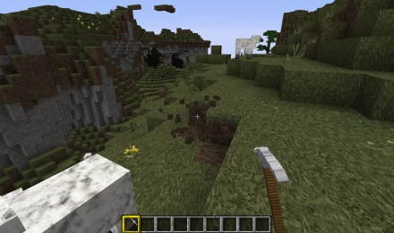
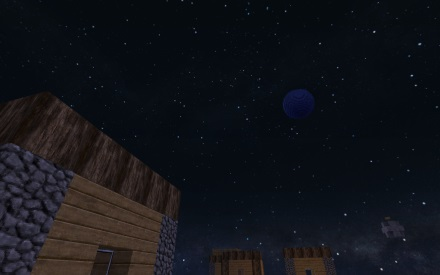

I created this site as a project for a college class. I thought I would throw it out here in case it contained something useful someone might like to see or make use of.
Minecraft is a sandbox game where you play by building with blocks. This simple concept turns out to be immensely fun and popular. Thanks to Minecraft servers you can build together with friends, and thanks to the Bukkit server you can expand Minecraft with plugins that altar the game play.
Minecraft is based on computer generated land forms or "worlds". These worlds are flat. They have sky, a surface of the world, underground and eventually a bottom to the world. Because the entire point of the game is building, most game play time is spent either on the surface or underground. You can build into the sky, or you can fly in "Creative mode", but you don't typically do much up there.
While the concept of building the entire world of blocks makes the scenery necessarily "blocky" Minecraft still has a subtle beauty to it that. This can be especially true when using high resolution texture packs.
Sometimes Minecraft's beauty is due to complex man-made structures, and other times it is simply a combination of the computer generated terraform, the texture pack, and the built in environment items, such as the setting sun.
However, due to the nature of Minecraft, the scenery can also be completely bizarre and unreal.
I saw a picture of a world once that was black, and it had strange things in it. This got me thinking about trying to make a "space" world. I credit this idea to the "LifeMud" Server. I've never been on their server, nor have I talked to them about how they did what they did. I just saw some screen shots on their web page that gave me the idea for a space world.
While it would probably be possible, in creative mode, to manually make a space world, to really make it fun requires the Bukkit server and some plugins. I plan to explain briefly on this web site what tools you need and how to quickly make a space world.
Note: This process is necessarily a bit complex. If you have never used a MCPatcher or MagicLauncher, or if you have never run a server before this will be a lot of work for you. You may stumble a bit. This site doesn't explain every detail or possible problem. It is aimed at somewhat experienced Minecraft hackers.
So let's get started with the Server Setup ->
{kind=link}
{kind=link}